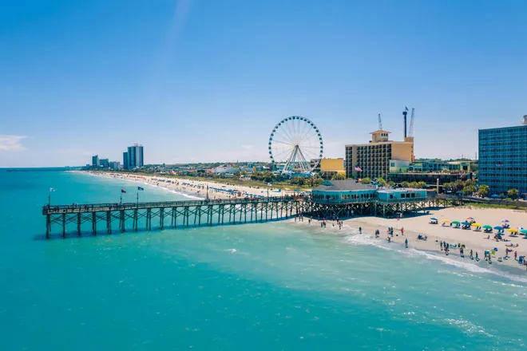

South Carolina
Home
Columbia
Charleston
Myrtle Beach
Contact Us
Myrtle Beach

The city's population: 35,682
The year the city was incorporated: 1957
The region of the state in which the city is located: Easternsouth
The classification of the city: Urban
The average income level of the city compared to the rest of the state: Lower
South Carolina average household income:
$50,570
Myrtle Beach, SC average household income:
$50,173